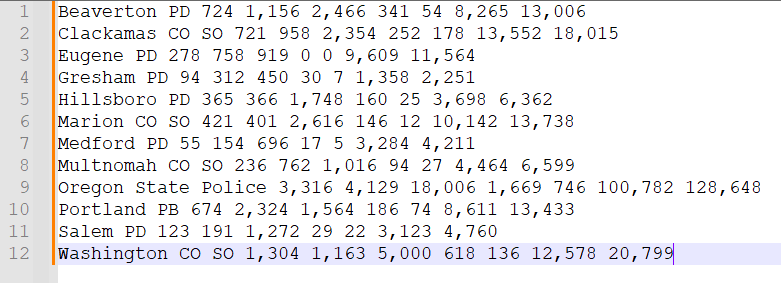

jQuery
Calvin (Deutschbein)
26 April 2023
Announcements
- JS day
- Then discussion day
- Then party day 🎉
- For next Monday (International Workers Day), one reading (and do your writing on it by Friday Midnight AOE):
- “Employers steal billions from workers’ paychecks each year”
- Wages.html. Have at least something that could credibly be considered a data visualization, with the code that generated it.
Script elements
<!DOCTYPE HTML>
<html>
<head>
<script>
function fizzBuzz()
{
for (let i = 1 ; i <= 10 ; i++)
{
console.log(i) ;
}
}
</script>
</head>
<body onload="fizzBuzz()"></body>
</html>Review Question 1
Consider the following .js line
for (let i = 1 ; i <= 10 ; i++)How many times will this for loop run?
- 9
- 10
- 11
- None of the above
Review Question 2
Consider the following .js line
for (let i = 0 ; i < 10 ; i++)How many times will this for loop run?
- 9
- 10
- 11
- None of the above
Review Question 3
Consider the following JavaScript excerpt from within the HTML document.
for (let i = 1 ; i <= 10 ; i++) { console.log(i) ; }What will be logged to console:
- 0 to 9
- 1 to 10
- 2 to 11
- Some other value(s)
Review Question 4
Consider the following JavaScript excerpt, giving combined race and ethnicity categories used in STOP data.
let raceEth = ["Asian/PI", "Black", "Latinx", "Middle Eastern", "Native American", "White"] ;What would the following log to console?
console.log(raceEth[2])- Asian/PI
- Black
- Latinx
- Middle Eastern
Review Question 6
Consider the following HTML line.
What does this line do?
- Run the script in
jquery-1.11.1.min.js - Display a
<script>element on the page - Add a
<script>element to be referenced by .js code - None of the above
HTML and CSS
HTML elements and CSS rules are similarly vertically structured.
HTML is a
- Element
- Start Tag
- Attributes
- Attribute name
- Attribute value
- Attributes
- Start Tag
- Void Tag
- Attributes
- ...
- Attributes
CSS is a
- Rule
- Selector(s)
- Declaration Block
- Declaration
- Property
- Value
- Declaration
- Declaration Block
- ...
Practice
Write a .js fizzBuzz.
- Create an HTML file, fizzBuzz.html
- Create a function that runs onload.
- The function should log to console the traditional "fizzBuzz" interview question.
- Log one line for the first natural numbers.
- Log Fizz if the number is divisble by 3
- Log Buzz if the number is divisble by 5
- Log the number otherwise, as a string.
No example, that is part of the practice.
More Scripting
Continue with the <script> element.
- In the context of HTML/CSS, we may perform some limiting scripting.
- We will use scripting to craft boutique and couture data visualizations
<script>alert('Hello, world!');</script>
jQuery
As far as I can tell, we are supposed to use jQuery to do data vis in .js
- I thought it was D3, but D3 seems hard and I'm tired.
- jQuery seems to render via svgs, or scalable vector graphics.
- There is a
<svg>element I'm not teaching - it's like canvas. - We include jQuery as one would a library.
">Listening
I don't really know what I want, but I think its a "Stacked Column 100% Chart"
- I use canvasJS, seemingly no relation to the element of the same name.
- The example chart looks like this.
Seems like a good way to compare rates across populations to me.
- INB4 Calvin you can't do stats and/or visualize data
Coding
For some reason, the example enumerates everything and uses no structured data or loops.
<!DOCTYPE HTML>
<html>
<head>
<script>
window.onload = function () {
//Better to construct options first and then pass it as a parameter
var options = {
animationEnabled: true,
title:{
text: "Sales of ACME based on Sales-Channels"
},
axisY: {
suffix: "%"
},
toolTip: {
shared: true,
reversed: true
},
legend: {
reversed: true,
verticalAlign: "center",
horizontalAlign: "right"
},
data: [
{
type: "stackedColumn100",
name: "WholeSale",
showInLegend: true,
yValueFormatString: "#,##0\"%\"",
dataPoints: [
{ label: "Q1", y: 44 },
{ label: "Q2", y: 88 },
{ label: "Q3", y: 65 },
{ label: "Q4", y: 69 }
]
},
{
type: "stackedColumn100",
name: "Retail",
showInLegend: true,
yValueFormatString: "#,##0\"%\"",
dataPoints: [
{ label: "Q1", y: 48 },
{ label: "Q2", y: 29 },
{ label: "Q3", y: 73 },
{ label: "Q4", y: 99 }
]
},
{
type: "stackedColumn100",
name: "Inside Sales",
showInLegend: true,
yValueFormatString: "#,##0\"%\"",
dataPoints: [
{ label: "Q1", y: 19 },
{ label: "Q2", y: 41 },
{ label: "Q3", y: 5 },
{ label: "Q4", y: 39 }
]
},
{
type: "stackedColumn100",
name: "Mail Order",
showInLegend: true,
yValueFormatString: "#,##0\"%\"",
dataPoints: [
{ label: "Q1", y: 20 },
{ label: "Q2", y: 100 },
{ label: "Q3", y: 7 },
{ label: "Q4", y: 43 }
]
}
]
};
$("#chartContainer").CanvasJSChart(options);
}
</script>
</head>
<body>
<div id="chartContainer" style="height: 370px; width: 100%;"></div>
<script type="text/javascript" src="https://canvasjs.com/assets/script/jquery-1.11.1.min.js"></script>
<script type="text/javascript" src="https://canvasjs.com/assets/script/jquery.canvasjs.min.js"></script>
</body>
</html>This annoying, least of all because it mandates manual data entry.
So I got wranglin'
Presumably you all know how to do this better than me but...

Go to page 12 and copy paste the text data into a working .txt and/or csv file.
So I got wranglin'
Then I applied a serious of replaces to the text.
- "," → ""
- each of " CO", " PD", " SO", etc. → "CO", "PD\"" etc (remove the " ", add quotes).
- " " → ", "
- "\r\n" → "],\r\n[\""
- Manually add an initally "[[" and closing "]" instead of the closing newline.
So I got wranglin'
This is just a well-formed .js array.

So I got wranglin'
Add to a file.
let raceEth=["Asian/PI","Black","Latinx","MiddleEastern","NativeAmerican","White"];
let stops=
[
["Marion",421,401,2616,146,12,10142,13738],
["Multnomah",236,762,1016,94,27,4464,6599],
["Oregon",3316,4129,18006,1669,746,100782,128648],
["Portland",674,2324,1564,186,74,8611,13433],
["Salem",123,191,1272,29,22,3123,4760]
];canvasJS uses dictionaries for everything for some reason, but it's hard to do that with find replace (these could be location dictionaries).
canvasJS
Back to the example. So the first thing we see is this:
<!DOCTYPE HTML>
<html>
<head>
<script>
window.onload = function () {
I'm going to refactor this into an onload html attribute and use a named function.
<!DOCTYPE HTML>
<html>
<head>
<script>
...
<body onload="render()" >
Just for consistency with earlier work.
canvasJS
Next we have an enormous dictionary with a helpful comment...
//Better to construct options first and then pass it as a parameter
var options = {
animationEnabled: true,
title:{
text: "Sales of ACME based on Sales-Channels"
},
axisY: {
suffix: "%"
I just removed everything except title and data.
{title:{text: "Police Stop Data"}, data: makeData(raceEth,stops)}
canvasJS
Data was... also stored as a dictionary? I don't understand.
data: [
{
type: "stackedColumn100",
name: "WholeSale",
showInLegend: true,
yValueFormatString: "#,##0\"%\"",
dataPoints: [
{ label: "Q1", y: 44 },
{ label: "Q2", y: 88 },
{ label: "Q3", y: 65 },
{ label: "Q4", y: 69 }
]
},
Well at the very least I can just make a function that builds this dictionary.
canvasJS
Functions > Dictionaries don't @ me
function iToDataPoint(labs,pts,i)
{
let dataPoint = [] ;
for (let j = 0 ; j < pts.length ; j++)
{
dataPoint.push( { label: pts[j][0], y: pts[j][i+1] } ) ;
}
All values are contained in the deeply nested "dataPoints" entry, which we can trivially generate with a single for loop over out own local dataPoints array "pts" and labels array "labs" for some entry number "i".
canvasJS
We then place the dataPoints inside a larger dictionary.
return {
type: "stackedColumn100",
name: labs[i],
showInLegend: true,
yValueFormatString: "#,##0\"%\"",
dataPoints: dataPoint
} ;
All that remains now to is build the full "data" entry for each "i".
canvasJS
All that remains now to is build the full "data" entry for each "i".
function makeData(labs,pts)
{
let data = [] ;
for (let i = 0 ; i < labs.length ; i++)
{
data.push(iToDataPoint(labs,pts,i)) ;
}
return data ;
}
Oh... there's really not much to that.
canvasJS
To render, we use the jQuery $() operator.
function render() {
$("#chartStop").CanvasJSChart({title:{text: "Police Stop Data" }, data: makeData(raceEth,stops)});
}
To refer to a HTML element by id.
canvasJS
All together, or check the Github.
<!DOCTYPE HTML>
<html>
<head>
<script>
let raceEth = ["Asian/PI", "Black", "Latinx", "Middle Eastern", "Native American", "White"] ;
let stops =
[
//["BeavertonPD", 724, 1156, 2466, 341, 54, 8265, 13006],
//["ClackamasCOSO", 721, 958, 2354, 252, 178, 13552, 18015],
//["EugenePD", 278, 758, 919, 0, 0, 9609, 11564],
//["GreshamPD", 94, 312, 450, 30, 7, 1358, 2251],
//["HillsboroPD", 365, 366, 1748, 160, 25, 3698, 6362],
["Marion", 421, 401, 2616, 146, 12, 10142, 13738],
//["MedfordPD", 55, 154, 696, 17, 5, 3284, 4211],
["Multnomah", 236, 762, 1016, 94, 27, 4464, 6599],
["Oregon", 3316, 4129, 18006, 1669, 746, 100782, 128648],
["Portland", 674, 2324, 1564, 186, 74, 8611, 13433],
["Salem", 123, 191, 1272, 29, 22, 3123, 4760]
//["WashingtonCOSO", 1304, 1163, 5000, 618, 136, 12578, 20799]
] ;
function iToDataPoint(labs,pts,i)
{
let dataPoint = [] ;
for (let j = 0 ; j < pts.length ; j++)
{
dataPoint.push( { label: pts[j][0], y: pts[j][i+1] } ) ;
}
return {
type: "stackedColumn100",
name: labs[i],
showInLegend: true,
yValueFormatString: "#,##0\"%\"",
dataPoints: dataPoint
} ;
}
function makeData(labs,pts)
{
let data = [] ;
for (let i = 0 ; i < labs.length ; i++)
{
data.push(iToDataPoint(labs,pts,i)) ;
}
return data ;
}
function render() {
$("#chartStop").CanvasJSChart({title:{text: "Police Stop Data" }, data: makeData(raceEth,stops)});
}
</script>
</head>
<body onload="render()" >
<div id="chartStop" style="height: 370px; width: 100%;"></div>
<script type="text/javascript" src="https://canvasjs.com/assets/script/jquery-1.11.1.min.js"></script>
<script type="text/javascript" src="https://canvasjs.com/assets/script/jquery.canvasjs.min.js"></script>
</body>
</html>
Exercise
- Make your own vis. You may use any data. I wrangled census data on Github.
- Can you measure disparities?
- Does your visualization support or challenge STOP?
- Can you incorporate interactive features?
- What can embedded visualizations do that images cannot?
Homework
- For next Monday (International Workers Day), one reading (and do your writing on it by Friday Midnight AOE):
- “Employers steal billions from workers’ paychecks each year”
- Wages.html.
- Have at least something that could credibly be considered a data visualization, with the code that generated it.
- Answer, at least in brief
- Was the gathering of this data ethical?
- Are there ethical and unethical uses of this data?
- How can we conclude if data is being used ethically?
- What responsibilities do data scientists have to society?